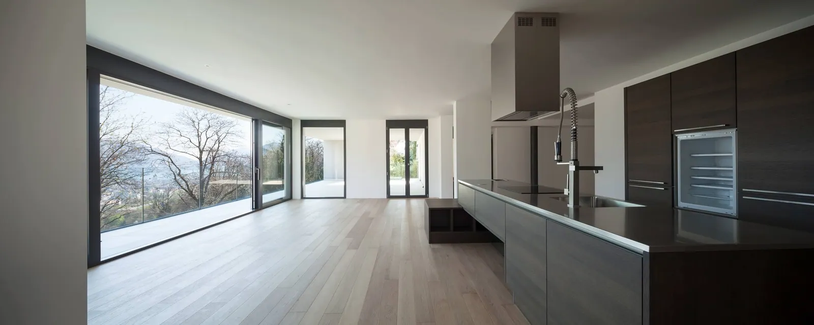

Hantverk för hela hemmet.
Från nybyggnation och varsam renovering till platsbyggd inredning och utemiljö. Vi sätter samman rätt kompetens för just ditt projekt.

Nybyggnation & ombyggnad
Från den första idén till ett hem som är helt ditt.
Lägenhetsrenovering
Nya funktioner. Samma respekt för husets karaktär.
Kulturhistorisk renovering
Bevara historien. Bygg varsamt för framtiden.
Landskap & utemiljö
Låt platsen utanför bli en del av hemmet.
Bygga i skärgården
Samma omsorg, även bortom landsvägen.
Byggservice & snickeri
De mindre arbetena förtjänar samma omtanke.
Totalentreprenad
En samlad väg från vision till färdigt projekt.
Generalentreprenad
När handlingarna är framme tar vi bygget vidare.
Vad vill du
bygga vidare på?
Ett nytt hem, en varsam renovering eller en idé som behöver hitta sin form. Börja med ett samtal med Dennis.
Berätta om ditt projekt 070 898 42 12Ritningar klara eller bara en första tanke?
Du är välkommen i båda fallen.
Du är välkommen i båda fallen.